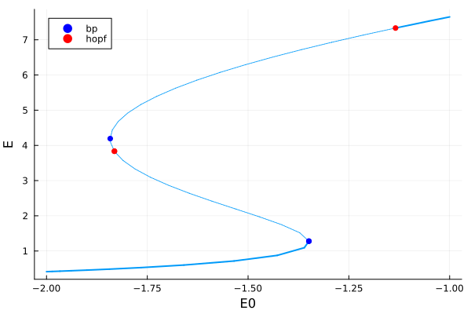
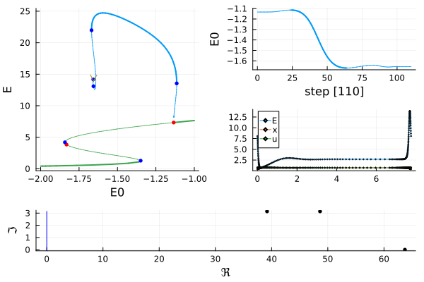
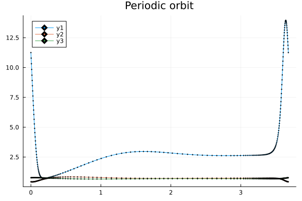
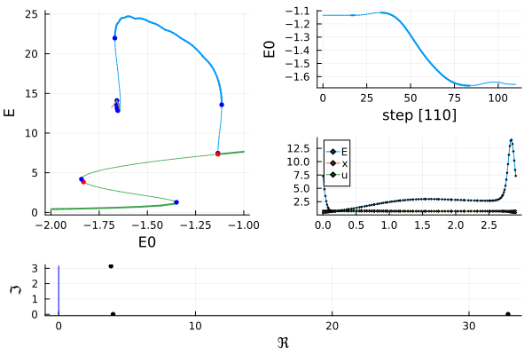
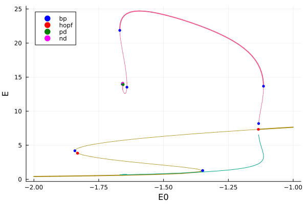
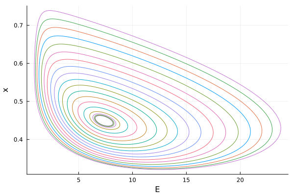

🟡 Neural mass equation (Hopf aBS)
The following model is taken from [Cortes]:
\[\left\{\begin{array}{l} \tau \dot{E}=-E+g\left(J u x E+E_{0}\right) \\ \dot{x}=\tau_{D}^{-1}(1-x)-u E x \\ \dot{u}=U_0 E(1-u)-\tau_{F}^{-1}(u-U_0) \end{array}\right.\]
with
\[g(y):=\alpha\log(1+exp(y/\alpha)).\]
We use this model as a mean to introduce the basics of BifurcationKit.jl, namely the continuation of equilibria and periodic orbits (with the different methods).
The model is interesting on its own because the branch of periodic solutions converges to an homoclinic orbit which can be challenging to compute. We provide three different ways to compute these periodic orbits and highlight their pro / cons.
It is easy to encode the ODE as follows
using Revise, Plotsimport BifurcationKit as BKimport BifurcationKit: @optic, @reset# vector fieldfunction TMvf!(dz, z, p, t = 0) (;J, α, E0, τ, τD, τF, U0) = p E, x, u = z SS0 = J * u * x * E + E0 SS1 = α * log(1 + exp(SS0 / α)) dz[1] = (-E + SS1) / τ dz[2] = (1 - x) / τD - u * x * E dz[3] = (U0 - u) / τF + U0 * (1 - u) * E dzend# parameter valuespar_tm = (α = 1.4, τ = 0.013, J = 3.07, E0 = -2.0, τD = 0.20, U0 = 0.3, τF = 1.5)# initial conditionz0 = [0.238616, 0.982747, 0.367876]# Bifurcation Problemprob = BK.ODEBifProblem(TMvf!, z0, par_tm, (@optic _.E0); record_from_solution = (x, p; k...) -> (E = x[1], x = x[2], u = x[3]),)We first compute the branch of equilibria
# continuation optionsopts_br = BK.ContinuationPar(p_min = -2.0, p_max = -1.)# continuation of equilibriabr = BK.continuation(prob, BK.PALC(tangent = BK.Bordered()), opts_br; normC = BK.norminf)scene = plot(br, plotfold=false, markersize=4, legend=:topleft)
With detailed information:
br ┌─ Curve type: EquilibriumCont
├─ Number of points: 42
├─ Type of vectors: Vector{Float64}
├─ Parameter E0 starts at -2.0, ends at -1.0
├─ Algo: PALC [Bordered]
└─ Special points:
- # 1, bp at E0 ≈ -1.34913909 ∈ (-1.34938031, -1.34913909), |δp|=2e-04, [converged], δ = ( 1, 0), step = 11
- # 2, hopf at E0 ≈ -1.83157834 ∈ (-1.83157834, -1.83112490), |δp|=5e-04, [converged], δ = ( 2, 2), step = 23
- # 3, bp at E0 ≈ -1.84196262 ∈ (-1.84196538, -1.84196262), |δp|=3e-06, [converged], δ = (-1, 0), step = 25
- # 4, hopf at E0 ≈ -1.13421119 ∈ (-1.13429114, -1.13421119), |δp|=8e-05, [converged], δ = (-2, -2), step = 39
- # 5, endpoint at E0 ≈ -1.00000000, step = 41
Branch of periodic orbits with Orthogonal Collocation
We compute the branch of periodic orbits from the last Hopf bifurcation point (on the right). We use Orthogonal Collocation to discretize the problem of finding periodic orbits. This is vastly more precise than the following methods because we use mesh adaptation.
# arguments for periodic orbits# one function to record information and one# function for plotting@views function record_from_solution(x, p; iter, state, k...) xtt = BK.get_periodic_orbit(p.prob, x, BK.getparams(iter, state)) return (max = maximum(xtt[1,:]), min = minimum(xtt[1,:]), period = BK.getperiod(p.prob, x, BK.getparams(iter, state)))end@views function plot_solution(x, p; iter, state, k...) xtt = BK.get_periodic_orbit(p.prob, x, BK.getparams(iter, state)) arg = (marker = :d, markersize = 1) plot!(xtt.t, xtt[1,:]; label = "E", arg..., k...) plot!(xtt.t, xtt[2,:]; label = "x", arg..., k...) plot!(xtt.t, xtt[3,:]; label = "u", arg..., k...) plot!(br; subplot = 1, putspecialptlegend = false)endargs_po = ( ;record_from_solution, plot_solution, # we use the supremum norm normC = BK.norminf)# continuation parametersopts_po_cont = BK.ContinuationPar(opts_br, ds= 0.001, dsmin = 1e-4, dsmax = 0.1, max_steps = 110, tol_stability = 1e-5)br_pocoll = @time BK.continuation( # we want to branch form the 4th bif. point br, 4, opts_po_cont, # we want to use the Collocation method to locate PO, with polynomial degree 4 BK.Collocation(50, 4; meshadapt = true); # regular continuation options plot = true, args_po...)Scene = title!("")
Let us plot the periodic orbit close to the end of the branch
sol = BK.get_periodic_orbit(br_pocoll, 100)plot(sol, title = "Periodic orbit", marker = :d, markersize = 1)
Periodic orbits with Parallel Standard Shooting
We use a different method to compute periodic orbits: we rely on a fixed point of the flow. To compute the flow, we use DifferentialEquations.jl. This way of computing periodic orbits should be more precise than the Trapezoid method. We use a particular instance called multiple shooting which is computed in parallel. This is an additional advantage compared to the two other methods.
import OrdinaryDiffEq as ODEprobsh = ODE.ODEProblem(TMvf!, copy(z0), (0, 1), par_tm; abstol = 1e-12, reltol = 1e-10)opts_po_cont = BK.ContinuationPar(opts_br, dsmax = 0.1, ds= -0.0001, dsmin = 1e-4, max_steps = 110, tol_stability = 1e-4)br_posh = @time BK.continuation( br, 4, opts_po_cont, # this is where we tell that we want Standard Shooting # with 15 time sections BK.Shooting(15, probsh, ODE.Vern9(), parallel = true); # regular continuation parameters plot = true, args_po..., # we reject the step when the residual is high callback_newton = BK.cbMaxNorm(10) )Scene = title!("")
Branch of periodic orbits with Trapezoid method
We then compute the branch of periodic orbits from the last Hopf bifurcation point (on the right). We use finite differences to discretize the problem of finding periodic orbits. Obviously, this will be problematic when the period of the limit cycle grows unbounded close to the homoclinic orbit.
# continuation parametersopts_po_cont = BK.ContinuationPar(opts_br, dsmax = 0.1, ds = 0.004, dsmin = 1e-4, max_steps = 80, tol_stability = 1e-7)@reset opts_po_cont.newton_options.tol = 1e-7Mt = 250 # number of time sectionsbr_potrap = BK.continuation( # we want to branch form the 4th bif. point br, 4, opts_po_cont, # we want to use the Trapeze method to locate PO BK.Trapeze(M = Mt); δp = 0.001, plot = true, args_po..., )scene = plot(br, br_potrap, markersize = 3)plot!(scene, br_potrap.param, br_potrap.min, label = "")
We plot the maximum (resp. minimum) of the limit cycle. We can see that the min converges to the smallest equilibrium indicating a homoclinic orbit.
Plot of some of the periodic orbits as function of $E_0$
We can plot some of the previously computed periodic orbits in the plane $(E,x)$ as function of $E_0$:
plot()# fetch the saved solutionsfor i_sol in 1:2:40 traj = BK.get_periodic_orbit(br_potrap, i_sol) plot!(traj[1,:], traj[2,:], xlabel = "E", ylabel = "x", label = "")endtitle!("")
References
- Cortes
Cortes, Jesus M., Mathieu Desroches, Serafim Rodrigues, Romain Veltz, Miguel A. Muñoz, and Terrence J. Sejnowski. Short-Term Synaptic Plasticity in the Deterministic Tsodyks–Markram Model Leads to Unpredictable Network Dynamics.” Proceedings of the National Academy of Sciences 110, no. 41 (October 8, 2013): 16610–15. https://doi.org/10.1073/pnas.1316071110.